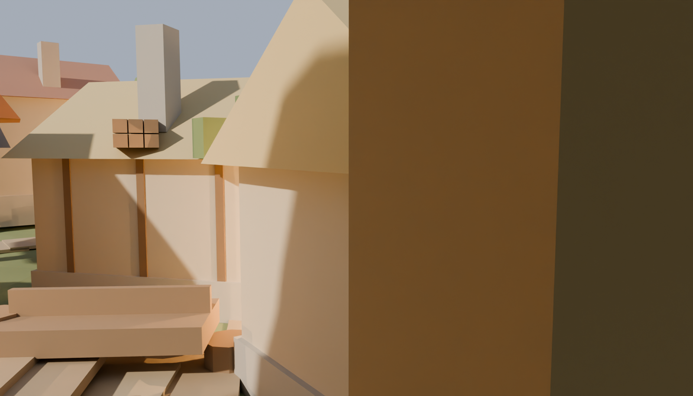
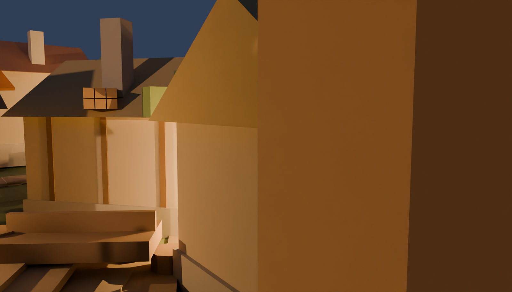

Contact renders out of the live master, 2026-07-31 03:51. Not the bake: these are review frames, and the two grades on the square and the pond are the A/B the morning board has to rule on — the project's ratified golden hour, against Chapter One's own Emberwake evening, where the town's light comes out of the Heartlight and the fifteen lamps lit from it.
THE BAKED SET → cameras.html — the 6 shipped shots of emb-cine, background and depth, each with its authored intent, solved standoff, measured visibility and character legibility beside it. The frames below are REVIEW renders and predate them.

